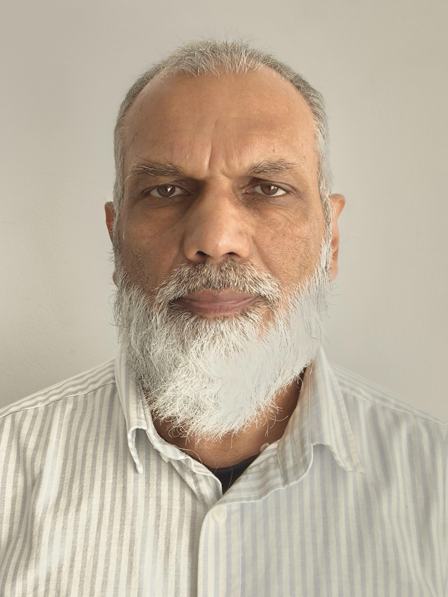

Mohammad Bora

Summary
I am an adaptable, conscientious, enthusiastic, and self-motivated individual with excellent communication skills. Worked in many different environments and have been able to build and develop excellent working relationships quickly and effectively.
Education
Royal Society of Art in Computer Operations
Work Experience
London Fire Brigade (LFB)
May 2024 – August 2024
- Member of Bridge Engineer Team based at London Fire Brigade providing support to 103 fire stations and Control Room where 999 Cals are received.
- To provide for the day to day performance of an ‘efficient’ and ‘effective’ 24/7 Operations Support function. Specifically, this involve being responsible on a day-to-day basis for the monitoring of the authorities mobilising system, network and server infrastructure.
- To deal with a broad range of exception and error conditions, making decisions as necessary about the way to resolve them, bearing in mind the need to maintain the highest possible availability.
- To carry out, and instigate improvements to operational and fault logging procedures ensuring that all faults are logged and resolved in an efficient and timely manner.
Skills
- Linux: ⭐️⭐️⭐️⭐️⭐️
- Windows:⭐️⭐️⭐️⭐️⭐️
- Network:⭐️⭐️⭐️⭐️⭐️
Awards and Certificatons
- Sun Certified Solaris 9 Systems Administrator
- Sun Certified Solaris 9 Network Administrator
Other
My Hobbies
Contact Me